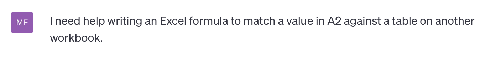
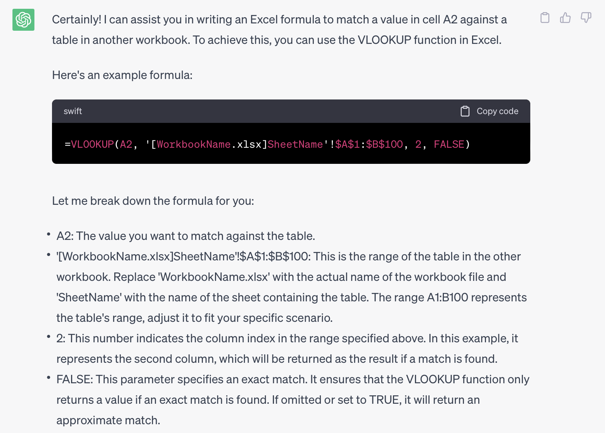

Excel
Excel Agenda
- Why Excel?
- Word Counts
- References & VLOOKUP
- Keyword Search
- ChatGPT
Why Choose Excel?
Pros
- Universally available
- Not going anywhere
- Low barrier to entry
- Scales in complexity
Cons
- Can be difficult to reproduce
- Potentially destructive
- Doesn’t scale well
- Complex formulas can be difficult
Word Counts
=LEN(TRIM(A1))-LEN(SUBSTITUTE(A1," ",""))+1
LEN(A1)counts the total number of characters inA1TRIMremoves any leading, trailing, and extra spaces (except single spaces between words)SUBSTITUTE(A1,” “,””)removes all spaces from the textLEN(SUBSTITUTE(A1,” “,“”)– counts the total number of characters in the text that have no spacesLEN(A1)-LEN(SUBSTITUTE(A1,” “,“”))subtracts the text length without spaces from the text length with spaces=LEN(A1)-LEN(SUBSTITUTE(A1,” “,“”))+1add 1 to the result as the number of spaces is one less than the total number of words
VLOOKUP
=VLOOKUP(A1, '[WorkbookName.xlsx]SheetName'!A1:B10,2,FALSE)
A1the value you are looking up'[WorkbookName.xlsx]SheetName'!A1:B10the range where you are looking for a match2the column the match is found inFALSEindicates whether you want to match exactly (FALSE) or approximately (TRUE)
Absolute/Relative References
- Relative references can move.
- Absolute references can’t move.
| Reference | Result When Copied |
|---|---|
| A2 | The row and column both change |
| $A2 | The column does not change |
| A$2 | The row does not change |
| $A$2 | Neither the row nor the column change |
Keyword Searches
=IF(SUMPRODUCT(--ISNUMBER(SEARCH(keyword,A2)))>0,"Yes","No")
keywordis a named range of the words you are searching forA2is the cell in the column you’re searching inSEARCH(keyword,A2)returns the start number of the found string as a numberISNUMBER(SEARCH(keyword,A2))converts items to either TRUE or FALSE--ISNUMBER(SEARCH(keyword,A2))coerces the TRUE and FALSE values to 1 and 0SUMPRODUCTsums the 1’s and 0’sIF(SUMPRODUCT...)>0,"Yes","No")if the result ofSUMPRODUCTis greater than 1, then the formula returns “Yes” (or any other result you want)
ChatGPT for Code & Formula Help
Warning
Assume that everything you put into ChatGPT (or other LLMs) is public. Do not enter confidential or proprietary information into it.
Tell ChatGPT what is is you need assistance with:

ChatGPT for Formula Help

Let’s Try!
Open 02-excel/excel-examples.xlsx if you’d like to follow along.